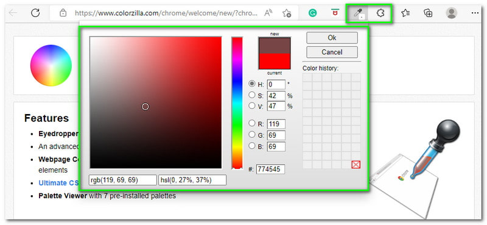

Colorzilla
это быстрый способ узнать цветовой код любого пикселя, не выходя из браузера, страницы или инспектора! Расширение позволяет быстро определить точный цвет, используемый на любом сайте в браузере Chrome. Оно включает в себя селектор цветов, последние выбранные цвета, анализатор градиентов CSS и анализатор страницы, который оценивает цвета на веб-странице.
Преимущества данного расширения:
Возможность определить цвет любого пикселя на веб-странице
Расширенный выбор цвета (аналогично Photoshop)
Отображение недавно выбранных цветов в истории цветов
Отображение информации об элементах, например имя тега, класс, id, размер и т. д.
Опция автоматического копирования выбранных цветов в буфер обмена (также имеет комбинации клавиш)
Возможность определить цвет динамических элементов
Возможность определить цвет при любом уровне масштабирования
Чтобы воспользоваться расширением, выполните следующие шаги:
step 1: Запустите расширение.
step 2: Наведите указатель мыши на интересующие элементы страницы.
step 3: На верхней панели появится HEX-код цвета.
step end: The end
Официальная документация -> Тык
Применение
Colorzilla позволяет легко выбирать цвета с любой веб-страницы, измерять расстояния и углы, а также создавать палитры цветов. ColorZilla также обеспечивает возможность быстрого захвата и анализа цветов, что удобно при работе с веб-дизайном или разработкой. Это незаменимый инструмент для профессионалов и любителей веб-дизайна, позволяющий эффективно работать с цветовыми схемами и выбирать идеальные оттенки для создания красивых и привлекательных веб-страниц.
Об генераторе Градиента
Редактор Ultimate CSS Gradient был создан Alex Sirota. Если этот инструмент вам понравился, ознакомьтесь с ColorZilla для более продвинутых инструментов, таких как инструменты для выбора цвета, палитровые редакторы и анализаторы сайтов.Как вы, возможно, знаете, HTML5 ввел множество интересных возможностей для веб-разработчиков. Одной из таких возможностей является возможность указывать градиенты с помощью чистого CSS3, без необходимости создавать изображения и использовать их как повторяющиеся фоны для создания градиентных эффектов.
Важно: Для использования этого Генератора градиентов вам понадобится свежая версия Firefox, Chrome, Safari, Opera или IE. Результативные CSS градиенты являются кроссбраузерными - они будут работать в этих браузерах и также вернутся к более простому градиенту в старых версиях Internet Explorer.
Особенности
- Мощный интерфейс, похожий на Photoshop
- Кроссбраузерный вывод CSS
- Горизонтальные, вертикальные, диагональные и радиальные градиенты
- Комплексные градиенты с несколькими точками остановки
- Поддержка прозрачности с несколькими точками прозрачности
- Форматы цветов Hex, rgb, rgba, hsl, hsla
- Поддержка полных градиентов с несколькими точками остановки в IE9
- Импорт из изображения (конвертирование градиента изображения в CSS)
- Импорт из существующего CSS
- Регулировка градиента по оттенку, насыщенности и светлоте
- Более 135 предустановленных градиентов
- Сохранение пользовательских предустановок градиентов
- Вывод Sass
- Гибкая панель предварительного просмотра
- Постоянные ссылки на градиенты для отправки и обмена
Таблица достоинств и недостатков
| + | - |
|---|---|
| Полностью бесплатно | Не обнаружил😅 |
| Доступно в РФ | Не обнаружил😅 |
| Легко в использовании | Не обнаружил😅 |
| Имба | Не обнаружил😅 |